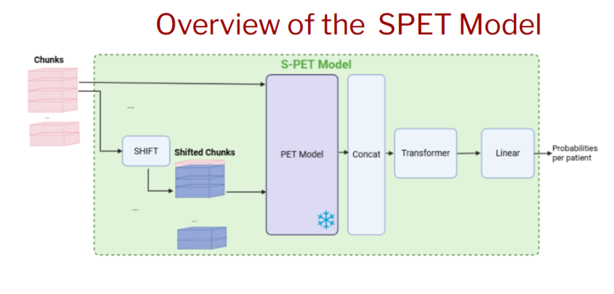
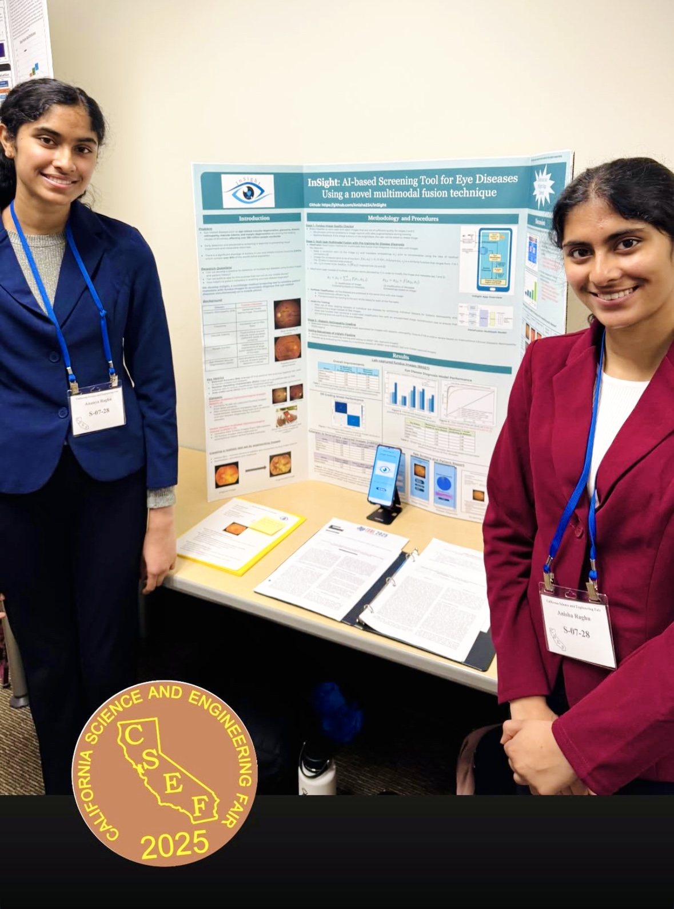
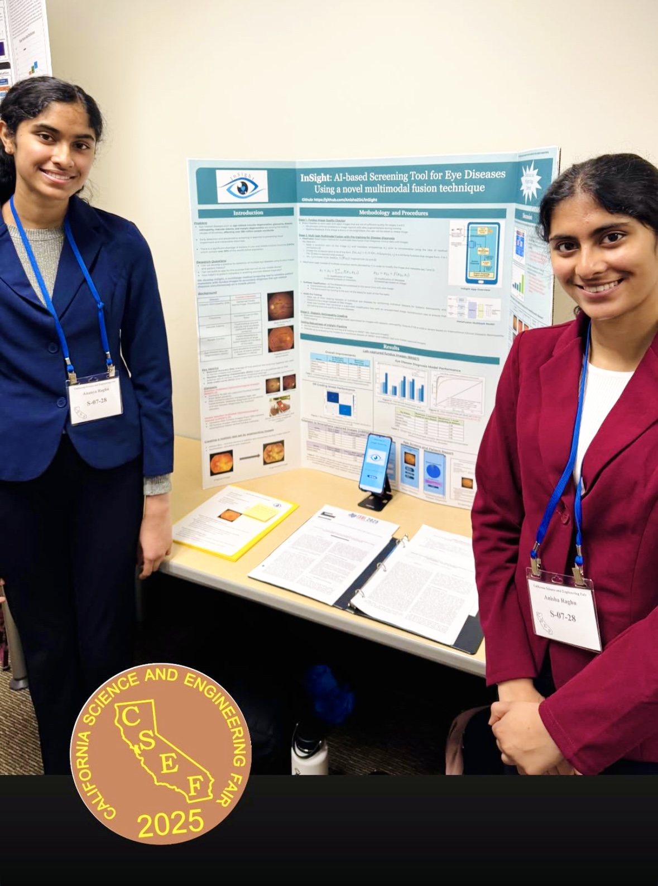
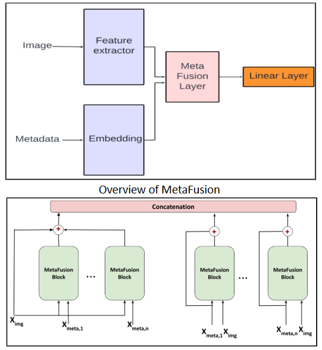
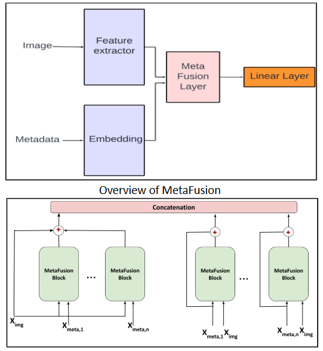
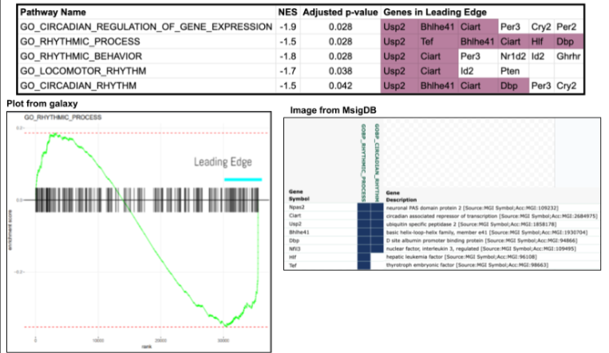
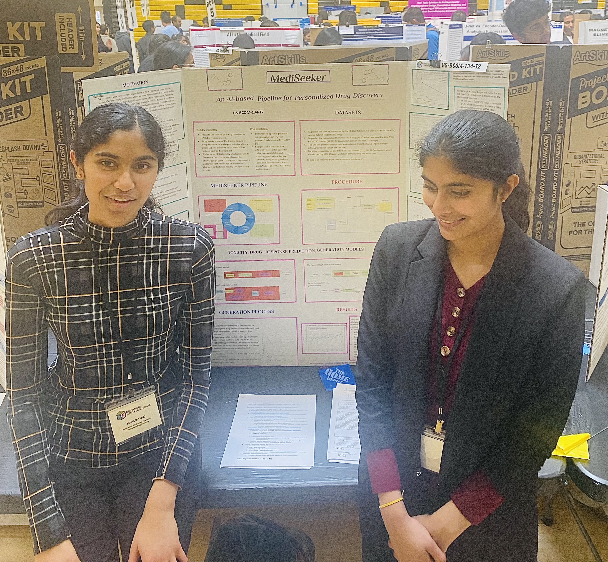
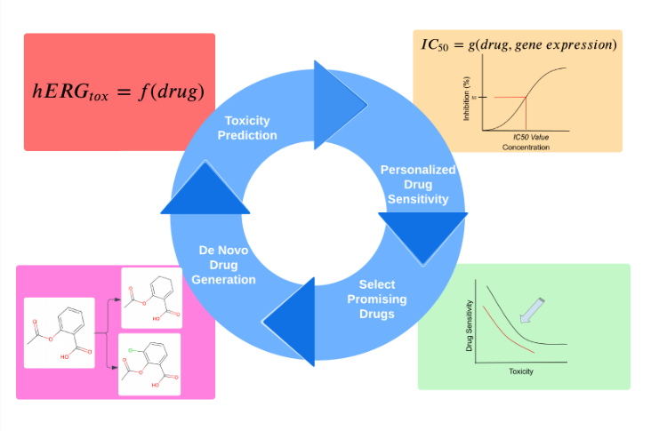
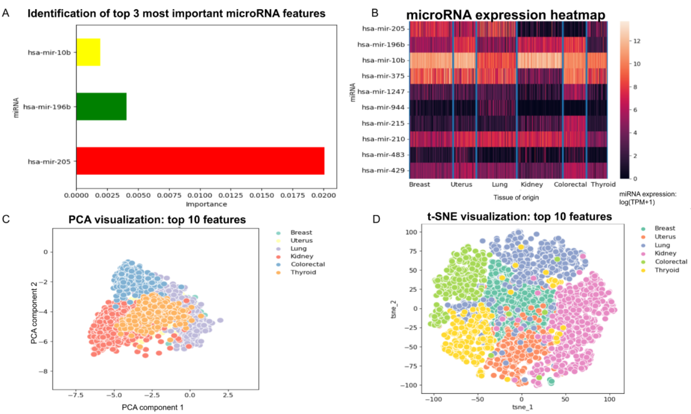
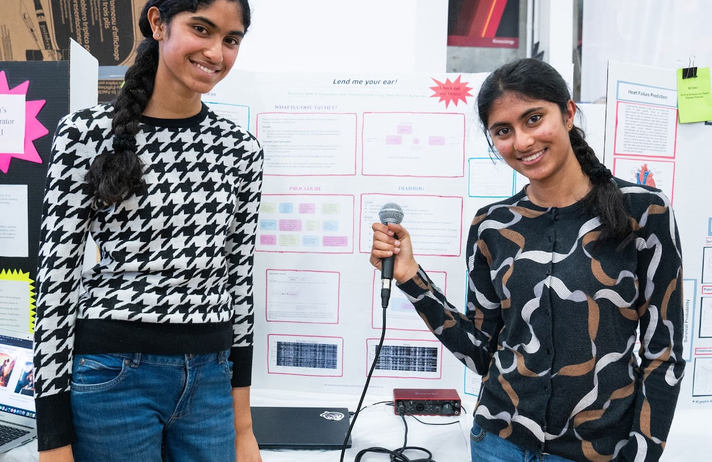

QTIM Lab Intern (Sept 2025)
- Research Intern at Quantitative Translational Imaging in Medicine Lab @ CU Denver
- AI-based diabetes progression prediction based on continuous glucose monitoring data from wearable sensors
- Our work shows that compared to using HbA1c, which remains the standard for diagnosing diabetes, applying deep learning to continuous glucose monitoring data can provide more accurate detection of diabetes progression from healthy and prediabetic individuals to those managing the disease with oral medication.

ASSIP – Anisha (July 2025 – Present)
- Research intern at Aspiring Scientists Summer Internship Program, George Mason University, under Professor Mihai Boicu.
- Pulmonary embolism is a life-threatening condition with a high mortality rate that demands rapid diagnosis, relying on radiologists to manually review thousands of CTPA image slices.
- Developed a two-stage transformer-based pipeline that automates Pulmonary embolism detection using both CTPA imaging and electronic health records.
- The architecture improved accuracy by 3.1% compared to baseline models.
- Accepted as a technical paper presentation at the IEEE MIT Undergraduate Research Technology Conference.

MIT Beaver Works Summer Institute Medlytics (July - October 2025)
- Selected for MIT BWSI Medlytics summer internship, where we learned about applications of AI and data analysis for medical data.
- Dysarthria is a motor speech disorder that results in slow and often incomprehensible speech. Speech intelligibility significantly impacts communication, leading to barriers in social interactions.
- We worked in a team of 4 to build a unified AI-based multilingual framework and web app to help dysarthric patients communicate effectively with dysarthria detection, severity classification, clean speech generation, speech-to-text conversion, and voice cloning.
- This work demonstrates a scalable, cross-lingual approach to diagnosing and supporting dysarthric patients.
- Accepted for poster presentation to Biomedical Engineering Society Annual Meeting 2025.
- Preprint: arXiv: A Multilingual Framework for Dysarthria — Detection, Severity Classification, Speech-to-Text, and Clean Speech Generation


Stanford AIMI Research Interns (June 2025)
- Selected for Stanford Artificial Intelligence in Medical Imaging Summer Research Internship.
- Explored applications of AI for classification, segmentation, and localization of pneumonia from chest X-rays.
- At the final symposium, all projects were judged by Stanford faculty and our teams won first and second places.
InSight: AI-based Retinal Disease Screening Tool (June 2025)
- Developed InSight, an AI-based screening tool aimed at improving early detection of five major eye diseases: age-related macular degeneration, glaucoma, diabetic retinopathy, macular edema, and pathological myopia.
- These conditions collectively affect over 782 million people worldwide, yet access to screening remains limited in middle and low-income countries.
- Because many of these diseases are asymptomatic in their early stages, patients often miss the window for treatment. Currently, over 90% of the world’s blind population lives in lower-income regions.
- InSight integrates patient metadata with fundus images to enable accurate, real-time diagnosis through a three-stage pipeline: (1) Image Quality Assessment Model, (2) Multimodal Five-Disease Diagnosis Model, (3) Diabetic Retinopathy Severity Grading.
- The multitask model demonstrated strong generalizability across varied imaging conditions (lab-captured and mobile-captured fundus images) while detecting five diseases simultaneously.
- Accepted to two international conferences at SPIE Photonics West 2025:
- We presented our work on InSight and won first place at the county science fair, were invited to the California Science & Engineering Fair (top 15 projects out of ~350 in Alameda County), and received the “Outstanding AI Innovation” Award.

 

MetaFusion: Multimodal Data Fusion Algorithm (Apr 2025)
- We developed MetaFusion, a novel multimodal fusion algorithm to combine clinical data with imaging data. Our method shows superior performance for skin cancer classification (from smartphone images), breast cancer detection (from X-ray mammograms), and glaucoma detection (from retinal fundus images).
- In low-resource settings where medical data are often fragmented or incomplete, data fusion is essential for combining multiple modalities of data — such as imaging and patient metadata — to support accurate diagnosis.
- Our method is parameter-efficient and demonstrates consistent performance across three diseases.
- Our paper on MetaFusion was accepted for presentation at the IEEE International Symposium on Biomedical Imaging (ISBI) 2025.
- Publication: IEEE Xplore – MetaFusion: A Novel Method for Integrating Clinical Metadata with Imaging Modalities for Medical Applications
 

NASA GeneLab Intern – Ananya (July 2024)
- Selected for NASA GeneLab for High Schools, a national bioinformatics and space biology training internship.
- Investigated colon transcriptome data from NASA Rodent Research 6 Mission.
- Applied bioinformatics techniques to study effects of spaceflight on circadian disruption, immune regulation, T-Cell suppression, and downstream impacts on colon inflammation.
- Co-authored a research proposal accepted for presentation at the American Society of Gravitational Space Research Conference.

Mediseeker: AI-based Drug Discovery Pipeline (2024)
- We develop a three-stage pipeline with AI-based toxicity prediction and personalized drug sensitivity prediction to generate effective and nontoxic drug candidates.
- Anti-cancer drug design is expensive and time-consuming, taking almost 2.8 billion dollars and more than 10–17 years to bring a new drug into clinical practice.
- Personalized drug treatment for cancer has the potential to revolutionize cancer therapy by taking into account tumor response and drug resistance for each individual patient.
- Our work on Mediseeker won second place in the county science fair. We were also invited as Student Speakers at the Johns Hopkins Global Health Leaders Conference.


Deep Learning–Based Identification of Tissue of Origin for Carcinomas of Unknown Primary Using MicroRNA Expression (2023)
- Investigated the potential of microRNAs as biomarkers for detecting the tissue of origin in metastatic cancer using data-driven machine learning approaches.
- Carcinoma of Unknown Primary (CUP) is a subset of metastatic cancers in which the primary tumor remains unidentified, accounting for up to 5% of all cancer diagnoses worldwide.
- The absence of a known primary site complicates treatment decisions and prognosis, underscoring the need for computational models that can infer tissue of origin.
- Our models achieved up to 97% accuracy in predicting the tissue of origin for metastatic samples, demonstrating feasibility for clinical translation and supporting diagnostic decision-making.
- Publication: Journal of Internet Medical Research – Deep Learning–Based Identification of Tissue of Origin for Carcinomas of Unknown Primary Using MicroRNA Expression

Lend Me Your Ear: AI-based Speech Separation and Enhancement (2023)
- Developed a simple real-time solution to help people hear better when there is interference from other speakers and noise.
- Hearing impairment is a serious problem affecting millions of people, making it difficult for them to hear clearly in crowded or noisy environments, even with hearing aids.
- We developed a new training set that allowed us to train a single model capable of removing interference from both sources, and implemented a real-time version that runs on a laptop with only ~40 ms latency.
- Improved signal quality by 3 dB for interfering speakers and 7 dB for background noise.
- Won first place at the county science fair and received three special awards from company sponsors. Invited to the California State Science Fair and recognized with Honorable Mention in the state.

AI Agent for Connect Four (2022)
- Built an AI-based Connect Four player using tabular Q-learning (reinforcement learning).
- Compared performance of the model against human players and brute-force search.
- Presented our work at the county science fair, winning “Grand Sweepstakes” in the county and overall first place. Invited to Broadcom MASTERS and the California State Science Fair, where it won third place at the state level.